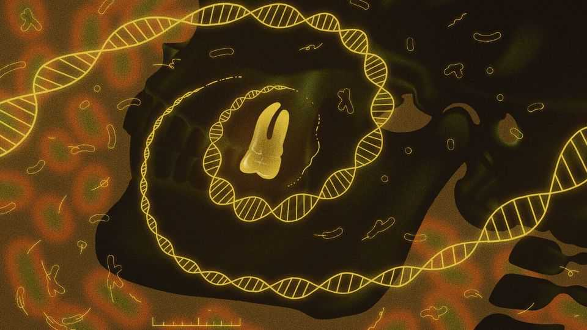

Ancient DNA is rewriting the history of plague
Dense cities do not seem to have been necessary for outbreaks of the disease
June 18th 2026

IN 2011 A team of geneticists managed to recover centuries-old DNA from the teeth of bodies that had been buried in East Smithfield, a medieval cemetery in London. Besides human DNA, they were able to isolate genetic material from Yersinia pestis, the species of bacterium that causes plague. This let them confirm what historians had long suspected but had never quite been able to prove: that the Black Death, which killed perhaps half of Europe’s population between 1346 and 1353, was indeed an outbreak of plague.
For a field more used to pottery, ancient ruins and often unclear written records, such “ancient DNA” has been revolutionary. It has allowed scientists to reconstruct the history of plague in unprecedented detail. Genomics has likewise confirmed that the Plague of Justinian, which struck the Byzantine empire between the years 541 and 549, was also caused by Y. pestis—although, interestingly, the strain responsible was not ancestral to the one that devastated Europe 800 years later.
The Plague of Justinian is the first big outbreak mentioned in the historical record. But DNA has proved that the disease goes far back into prehistory, too. Now, in a paper published in Nature, Eske Willerslev, a geneticist at the University of Copenhagen and the University of Cambridge, and his colleagues describe the earliest evidence of plague to date: two lethal outbreaks of the disease around 5,500 years ago among hunter-gatherers living near Lake Baikal, in what is these days called Siberia. Intriguingly, that is long before the appearance of the sorts of densely populated, squalid cities—such as medieval London or ancient Constantinople—that had been thought to be necessary for big outbreaks of the disease.
As with the bodies from East Smithfield, Dr Willerslev and his colleagues were interested in the hunter-gatherers’ teeth. Being tough and hard-wearing, teeth help protect DNA from the ravages of time. And because the pulp inside them is connected to the circulatory system, DNA from pathogens in a person’s blood can be preserved as well. Teeth are a “bio-archive of a person’s life”, says Christina Warinner, an anthropologist at Harvard University.
Hundreds of ancient Y. pestis genomes have now been sequenced. The origins of the Black Death have been traced to Lake Issyk-Kul in modern-day Kyrgyzstan, near the trade routes that linked Central Asia to Europe. The source of the Justinian plague is still debated. But the genetic evidence suggests that it too emerged in Central Asia, possibly in the second century. Researchers now know that Y. pestis was circulating among humans as early as the Late Neolithic period. They have discovered strains that are now extinct. Others have adapted and survived, mutating into the strains that killed millions of people thousands of years later.
When Dr Willerslev and his colleagues sequenced the DNA from Lake Baikal, they found evidence of two distinct outbreaks, occurring about 5,050 and 5,520 years ago. Almost 40% of the people buried in four different cemeteries during the Late Neolithic had been infected, a rate higher than some of London’s plague pits. And the infections appear to have been deadly.
That is significant, because whether early outbreaks of plague were as lethal as later ones has been a subject of much academic debate. Radiocarbon dating suggests the skeletons were buried at similar times. There are several instances of siblings, or parents and children, being buried together, indicating that the disease spread among close relatives, perhaps as they cared for one another.
One particularly striking feature, says Dr Willerslev, is the number of children and teenagers. Genetic analysis showed that the Baikal strain of Y. pestis carried genes for a toxin found today in Y. pseudotuberculosis, a closely related bug that causes a disease called yersiniosis. The toxin is a “superantigen”, which can provoke a violent and sometimes fatal over-reaction from the immune system. Such complications occur more commonly in children, rather than adults, infected with Y. pseudotuberculosis. If the same was true of Y. pestis 5,500 years ago, that could explain the high death rate among the young.
The findings also challenge the idea that densely packed populations and proximity to livestock set the stage for big outbreaks of the disease. Y. pestis is mostly found in rodents, such as marmots, mice and rats, and is often spread by flea bites. The large rat populations in medieval towns and cities—and the fleas they hosted—are thought to have been vital in spreading the Black Death.
But the victims at Baikal were not sedentary urbanites. They were hunter-gatherers living in small, mobile communities. Intriguingly, many prehistoric strains of Y. pestis, including those found in Dr Willerslev’s studies, lack a mutation that helps the bug to survive inside fleas. Besides flea bites, plague can spread through contact with bodily fluids, or as droplets in the air. Dr Willerslev’s results suggest that those alternative transmission methods may have been enough to cause calamitous outbreaks by themselves.
Exactly how the outbreak began remains unclear. But it seems to have happened on several occasions. Similar strains of plague have been detected in individuals dated to only a few centuries later, but found thousands of kilometres away in Latvia and Sweden. That could reflect a big rodent reservoir of Y. pestis that spanned the Eurasian continent. Another option, speculates Dr Willerslev, is transmission through some other, as-yet-unknown insect, perhaps carried on animal skins and spread through trade.
Plague has not gone away, but these days it is not the threat it once was. Around 540 cases a year were reported worldwide between 2010 and 2015, the most recent years for which figures are available. Treatment with antibiotics can cut the death rate to 20% or so. But tracing the lineage of bugs like Y. pestis is not of interest only to academic historians. By tracking how pathogens emerge, thrive and disappear across thousands of years, researchers are building a record of which genetic mutations were and were not successful for the spread of disease. Dr Willerslev hopes that will provide data for future vaccine development and disease monitoring. In a world still suffering from the lingering effects of the covid-19 pandemic, the wisdom of such research should be obvious. ■
Curious about the world? To enjoy our mind-expanding science coverage, sign up to Simply Science, our weekly subscriber-only newsletter.